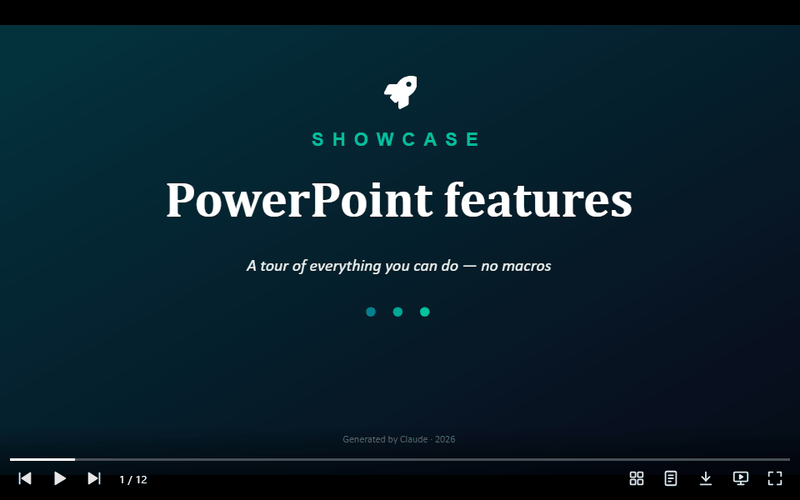

<universal-slides-viewer>
The <universal-slides-viewer> web component: plays .pptx and .ppt presentations faithful to Microsoft PowerPoint — slide transitions, entrance, emphasis and exit animations, timings, media, charts, SmartArt and tables — with a player-style control bar, like the browser's <video>.
Package @universal-office/slides-viewer

- Slide show (F5-style) with click steps, or automatic playback with the file's timings
- Control bar: previous/next, play, mute, thumbnails, speaker notes, download, present, full screen and a seekable progress bar
- Fonts embedded in the file are used; missing ones fall back like PowerPoint
- Accessible: a text version of each slide for screen readers, announced on every change; full keyboard support; English, Portuguese and Spanish UI
- Any control can be removed or restyled from outside
Installation
npm install @universal-office/slides-viewerAll the code is inside the package: one ES module plus a folder that must be served next to it. Its only dependency is @universal-office/font-files (pinned to an exact version), the open fonts.
| Path | What it is |
|---|---|
index.js | The component (registers <universal-slides-viewer> on import) |
chunks/ | Parts loaded on demand |
@universal-office/font-files | Open fonts used as metric-compatible substitutes — point fonts at this package's folder |
import '@universal-office/slides-viewer';<universal-slides-viewer src="/pitch.pptx" fonts="/node_modules/@universal-office/font-files"
style="display:block; aspect-ratio:16/9"></universal-slides-viewer>Give the element a size with CSS — the slide is fitted inside, and the rest is letterbox.
Attributes
| Attribute | Description |
|---|---|
src | Presentation to fetch (same origin or CORS). The file name is used for the download and the accessible name. |
fonts | Folder with the open fonts (the @universal-office/font-files package). Read on the first load. |
nocontrols | Removes the whole control bar. |
no<item> | Removes one control: nonav, nocounter, noplay, nomute, nothumbnails, nonotes, nodownload, nopresent, nofullscreen, noprogress. Items that do not apply hide themselves (mute without media, notes without notes). |
lang | UI language (en · pt · es; any region: es-MX, es-419… → Spanish). Without it: the first of Spanish/Portuguese/English the browser prefers (es-* → Spanish, pt-* → Portuguese), otherwise English. |
Methods
| Method | Description |
|---|---|
loadPptx(bytes: Uint8Array) | Opens .pptx or .ppt. Throws on an invalid file and keeps the current one. |
getSlideCount() · getSlideIndex() · selectSlide(i) · next() · prev() | Navigation (0-based). |
present(from?, opts?) · stopPresentation() · isPresenting() | Slide show. from = 'start' begins at the first visible slide. Call from a user gesture (full screen needs one). |
play(opts?) · stopPlayback() · isPlaying() | Automatic playback with the file's timings. |
getSlideNotes(i) | Speaker notes as plain text. |
renderSlideToCanvas(i, canvas, width = 1280) | Renders a slide at an exact size — e.g. to export a PNG. |
renderThumbnail(i, canvas) | Renders a slide fitted into a canvas. |
toggleFullscreen() · fontsReady() | Full screen without presenting; wait for fonts. |
present() options (defaults come from the file's slide-show settings): { useTimings, loop, fullscreen, animations, kiosk }. play() options: { from, loop, useTimings, defaultSlideMs, media: 'realtime' | 'seek' }.
Events
| Event | detail | When |
|---|---|---|
us-loaded | { count } | A presentation finished loading. |
us-error | { src, error } | src could not be fetched or read. |
us-slide | { index } ({ index, step, steps } while presenting) | The slide changed. |
us-step | { index, step, steps } | A click step while presenting. |
us-present-end | { index } | The slide show ended. |
us-playback-end | — | Automatic playback ended. |
us-image | { part } | An image finished decoding (redraw your own thumbnails). |
us-download | { bytes, filename } | Download button. Cancelable — preventDefault() to handle the file yourself. |
Styling
Each property first reads --upv-<name>, then the shared --uo-<name> (one theme for both viewers):
| Property | Default |
|---|---|
--upv-background | #000 (letterbox) |
--upv-focus-color | #4ea1ff |
--upv-controls-color · --upv-controls-size · --upv-controls-bg · --upv-controls-hover-bg | #fff · 22px · dark gradient · translucent white |
--upv-progress-color · --upv-progress-track · --upv-progress-height | #fff · translucent white · 3px |
--upv-notes-height · --upv-thumbnails-bg | 28% · translucent black |
Parts for ::part(): controls, progress, progress-value, counter, thumbnails, thumbnail, notes, slide-text, button and button-<name> (prev, play, next, mute, thumbnails, notes, download, present, fullscreen). The bar hides itself after 2.5 s without movement.
universal-slides-viewer {
--uo-progress-color: #e91e63;
--upv-controls-size: 26px;
}
universal-slides-viewer::part(button-present) { display: none; }Keyboard
| Keys | Navigating | Presenting |
|---|---|---|
| → · PageDown · Space (also ↓ Enter N when presenting) | Next slide | Next step |
| ← · PageUp (also ↑ Backspace P when presenting) | Previous slide | Previous step |
| Home · End | First / last slide | First / last slide |
| F | Full screen | — |
| Esc | Stop playback | End the slide show |
Formats
Input: .pptx (and .pptm, .ppsx, .potx…) and .ppt (PowerPoint 97–2003, converted in memory). Output: the original file (download), PNG via renderSlideToCanvas.
License
MIT. The fonts (@universal-office/font-files) are under the SIL OFL 1.1 and the Apache License 2.0.